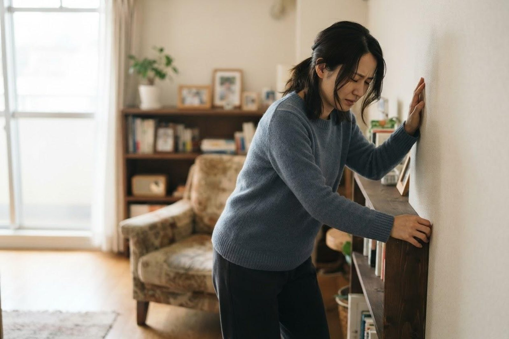

健診で貧血と言われました。鉄剤を飲めばよいのでしょうか？
A. 回答貧血とは、血液中で酸素を運ぶ「ヘモグロビン」が少なくなった状態を指します。その原因として最も多いのは鉄の不足ですが、鉄を補うだけで終わらせないことが大切だとされています。というのも、鉄が不足したのには必ず理由があるからです。とくに中高年の男性や閉経後の女性では、胃や大腸からの少量の出血が長く続いていたことが背景にある場合があり、その出血源を調べることが重要と考えられています。健診でヘモグロビンの低下を指摘されたら、まずは内科（消化器内科）でご相談ください。

貧血の主な原因
ひとことで貧血といっても、その成り立ちはさまざまです。一般的には次のようなものが挙げられます。
- 消化管からの出血：胃潰瘍・十二指腸潰瘍、大腸ポリープ、大腸がん、痔などから少しずつ出血が続き、鉄が失われていくことがあります。自覚のないまま進むことも多いとされています。
- 月経に伴う鉄の喪失：月経のある女性では最も多い原因とされます。経血量が多い場合や、子宮筋腫などの婦人科の病気が隠れている場合もあります。
- 鉄の摂取不足・需要の増加：偏った食事、極端なダイエット、成長期や妊娠中などで鉄が不足することがあります。
- ビタミンB12・葉酸の不足：赤血球をつくる材料が足りず、赤血球が大きくなるタイプの貧血が起こります。胃の手術後や吸収の障害が関係することもあります。
- 腎臓の働きの低下（腎性貧血）：腎臓でつくられる造血ホルモンが減ることで貧血になる場合があります。慢性腎臓病の方に見られます。
- その他：慢性的な炎症や甲状腺の病気、まれに血液自体の病気が背景にあることもあります。
なぜ「鉄を飲むだけ」では不十分とされるのか
鉄を補えば数値はいったん改善することが多いのですが、出血が続いていれば、やめた途端にまた下がってしまいます。それ以上に問題なのは、貧血が体からの「どこかで出血しているかもしれません」というサインである可能性を見逃してしまうことです。実際、中高年の男性や閉経後の女性の鉄欠乏性貧血では、月経による喪失がないぶん、消化管からの出血を疑って上部（胃）・下部（大腸）の内視鏡検査で原因を確かめる考え方が一般的とされています。原因がはっきりすれば、その病気に対する治療につなげることができます。
こんな症状はありませんか？
- 階段や坂道で息切れ・動悸がする
- 立ちくらみ、めまい、疲れやすさが続く
- 顔色が悪いと人から言われる
- 黒い便（タール便）や血便が出たことがある
- 便が細くなった、便秘と下痢を繰り返す
- 爪が反り返る、氷などをむしょうに食べたくなる
受診の目安
健診で指摘された数値だけでなく、次のような症状があるかどうかも受診の判断材料になります。
すぐに受診を検討してください
- 真っ黒でドロっとした便（タール便）が出た、または血便がある
- 吐いたものに血液やコーヒーかすのようなものが混じった
- じっとしていても動悸・息切れが強い、意識が遠のく感じがする
- 短期間でヘモグロビンが急に大きく下がった
- 月経の出血量が非常に多く、日常生活に支障が出ている
早めの受診をおすすめします
- 健診で「ヘモグロビンが低い」「要精査」と指摘された
- 男性、または閉経後の女性で貧血を指摘された
- 市販の鉄のサプリメントを飲んでも改善しない、やめると戻る
- 体重が減ってきた、食欲が落ちた、便通が変わった
- 以前から貧血を指摘されているが、原因を調べたことがない
当院での対応・検査
当院は内科・消化器内科（胃腸科）を標榜しています。まず血液検査でヘモグロビンや赤血球の大きさ、血清鉄・フェリチン（体内の貯蔵鉄の指標）、ビタミンB12・葉酸、腎機能などを確認し、どのタイプの貧血かを整理します。そのうえで消化管からの出血が疑われる場合には、便潜血検査や、新世代の内視鏡システムを用いた胃カメラ・大腸カメラをご提案することがあります。鼻から入れる経鼻内視鏡にも対応しています。婦人科・血液内科などの領域が疑われる場合には、適切な医療機関をご紹介します。
受診・検査についての実務的なご案内
- 初診は予約なしでも受診いただけます。朝7時から診療しており、お仕事前の受診も可能です。混雑状況によりお待ちいただく場合があります。
- 血液検査は採血自体は数分で終わります。項目により当日中に結果をお伝えできるものと、後日ご説明となるものがあります。
- 内視鏡検査は予約制です。胃カメラは検査自体がおおむね10分前後、大腸カメラは20〜30分程度が目安ですが、前処置や検査後の休憩を含めると半日程度をみておくと安心です。
- 検査前の準備として、胃カメラは前日夜からの絶食、大腸カメラは前日の食事調整と当日の下剤の服用が必要です。事前に詳しくご説明します。
- 持ち物：健康保険証（マイナ保険証）、健診結果の用紙、お薬手帳をお持ちください。血液をサラサラにするお薬を飲んでいる方は必ずお申し出ください。
- 費用：健診の指摘を受けての検査は保険診療の対象となります。金額は検査内容によって異なりますので、詳しくはお問い合わせください。
受診時に伝えていただきたいこと
- いつから貧血を指摘されているか（過去の健診結果があると助かります）
- 便の色や性状の変化、血便の有無
- 女性の方は月経の量・周期の変化、閉経の時期
- 食事の内容、サプリメントの使用状況
- 飲んでいるお薬（痛み止め、血液をサラサラにする薬など）
- ご家族に胃がん・大腸がん・ポリープの方がいるか
参考にした情報
健診で貧血を指摘された方は、原因をはっきりさせるためにも一度ご相談ください。血液検査から内視鏡検査まで、当院で対応しています。
最終更新：2026年8月26日